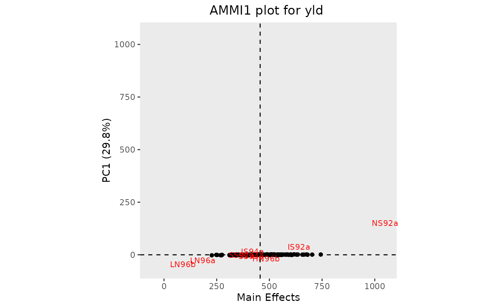
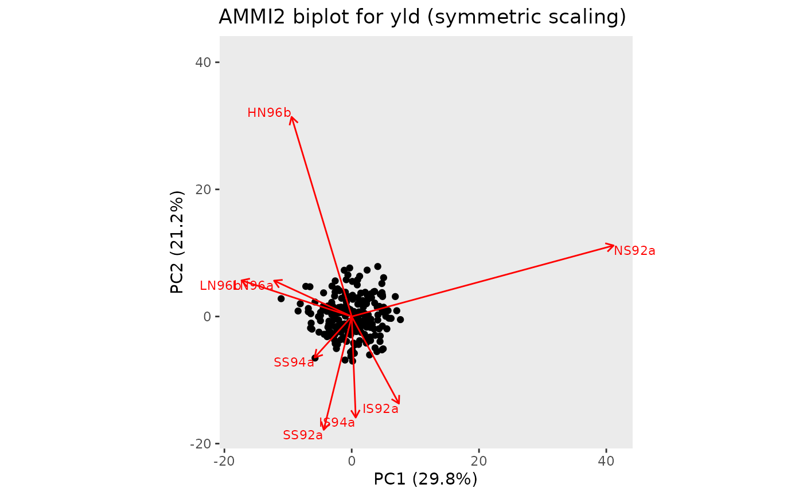

Two types of biplot can be made. A plot of genotype and environment
means vs PC1 (AMMI1) or a biplot of genotypes and environment interaction
with PC1 and PC2 (AMMI2).
If the AMMI analysis was done by year, a separate plot will be made for
every year in the data. For some years the number of principal components
may be lower than the number specified on the secondary axis. If this is the
case this year is skipped when plotting. If this happens for all years the
function returns an error.
Usage
# S3 method for class 'AMMI'
plot(
x,
...,
plotType = c("AMMI1", "AMMI2", "GGE2"),
scale = 1,
plotGeno = TRUE,
colorGenoBy = NULL,
colGeno = NULL,
sizeGeno = 0,
plotConvHull = FALSE,
plotEnv = TRUE,
colorEnvBy = NULL,
colEnv = NULL,
sizeEnv = 3,
envFactor = 1,
primAxis = "PC1",
secAxis = "PC2",
rotatePC = NULL,
title = NULL,
output = TRUE
)Arguments
- x
An object of class AMMI
- ...
Not used.
- plotType
A character string indicating which plot should be made. Either "AMMI1" for an AMMI1 plot (genotype and environment means vs PC1) or "AMMI2" for an AMMI2 biplot (genotypes and environment interaction with PC1 and PC2) respectively. For results of a GGE analysis only an GGE2 biplot can be made and plotType may be ignored.
- scale
A numerical value. The variables are scaled by
lambda ^ scaleand the observations bylambda ^ (1 - scale)wherelambdaare the singular values computed byprincompingxeAmmi. Normally0 <= scale <= 1, and a warning will be issued if the specified scale is outside this range.- plotGeno
Should genotypes be plotted?
- colorGenoBy
A character string indicating a column in the
TDused as input for the AMMI analysis by which the genotypes should be colored. IfNULLall genotypes will be colored in black.- colGeno
A character vector with plot colors for the genotypes. A single color when
colorGenoBy = NULL, a vector of colors otherwise.- sizeGeno
An numerical value indicating the text size for plotting the genotypes. Use
sizeGeno = 0for plotting genotypes as points instead of using their names.- plotConvHull
Should a convex hull be plotted around the genotypes. If
TRUEa convex hull is plotted. For GGE2 biplots lines from the origin of the plot perpendicular to the edges of the hull are added. Only valid for AMMI2 and GGE2 biplots.- plotEnv
Should environments be plotted?
- colorEnvBy
A character string indicating a column in the
TDused as input for the AMMI analysis by which the environments should be colored. IfNULLall genotypes will be colored in red.- colEnv
A character string with plot colors for the environments. A single color when
colorEnvBy = NULL, a vector of colors otherwise.- sizeEnv
An integer indicating the text size for plotting the environments.
- envFactor
A positive numerical value giving a factor by which to blow up the environmental scores. Providing a value between 0 and 1 will effectively blow up the genotypic scores.
- primAxis
A character string indicating the principal component to be plotted on the primary axis of the AMMI2 plot. Has to be given as
"PCn"where n is the number of the principal component.- secAxis
A character string indicating the principal component to be plotted on the secondary axis of the AMMI2 plot. Has to be given as
"PCn"where n is the number of the principal component. n Has to differ fromprimAxis.- rotatePC
A character string indicating a genotype or environment that is to be aligned with the positive x-axis in the plot.
- title
A character string used a title for the plot.
- output
Should the plot be output to the current device? If
FALSEonly a list of ggplot objects is invisibly returned.
See also
Other AMMI:
fitted.AMMI(),
gxeAmmi(),
report.AMMI(),
residuals.AMMI()
Examples
## Run AMMI analysis.
geAmmi <- gxeAmmi(TD = TDMaize, trait = "yld")
## Create an AMMI1 biplot.
plot(geAmmi)

## Create an AMMI2 biplot.
plot(geAmmi, plotType = "AMMI2", scale = 0.5)

## Create an AMMI2 biplot, with HN96b along the positive x-axis.
plot(geAmmi, plotType = "AMMI2", scale = 0.5, rotatePC = "HN96b")
 ## Run GGE analysis.
geGGE <- gxeGGE(TD = TDMaize, trait = "yld")
## Create an GGE2 biplot.
## Add a convex hull.
plot(geGGE, plotType = "GGE2", scale = 0.5, plotConvHull = TRUE)
## Run GGE analysis.
geGGE <- gxeGGE(TD = TDMaize, trait = "yld")
## Create an GGE2 biplot.
## Add a convex hull.
plot(geGGE, plotType = "GGE2", scale = 0.5, plotConvHull = TRUE)